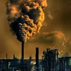
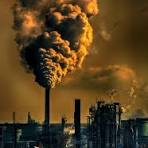

Pollution History

Pollution's history is a tale of industrialization's unintended consequences. From the smog-choked skies of the Industrial Revolution to water and agricultural pollution, each era has brought new challenges. The mid-20th century saw the rise of environmental movements and regulatory measures, yet the 21st century presents new threats like plastic pollution and climate change. Learning from history, responsible environmental stewardship is crucial for a cleaner, healthier future.
The latter half of the 20th century witnessed the emergence of the environmental movement, advocating for cleaner air, water, and sustainable practices. Governments worldwide responded with regulatory measures and international agreements. The creation of the Environmental Protection Agency (EPA) in the United States and the signing of the Kyoto Protocol marked significant milestones in the global effort to address pollution
While progress has been made, the 21st century brings new challenges. Rapid urbanization, increased industrialization in emerging economies, and the impact of climate change pose ongoing threats. Plastic pollution, electronic waste, and the depletion of natural resources present complex environmental issues that require innovative solutions and global cooperation.
Conclusion
The history of pollution reflects humanity's journey through industrialization, awareness, and the pursuit of sustainable living. From the smog-choked skies of the Industrial Revolution to contemporary challenges, each era has left an indelible mark on the planet. As we navigate the complexities of the present, the lessons of history underscore the importance of responsible environmental stewardship to ensure a cleaner and healthier future for generations to come.